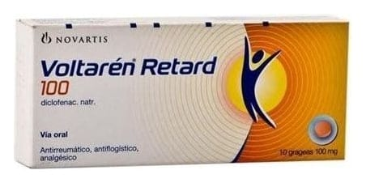

Voltaren 100 mg Uzatılmış Salımlı Tablet, 10 Adet

Ne için kullanılır
KT · Bölüm 1• Her tablet 100 mg etkin madde (diklofenak sodyum) içerir. • VOLTAREN, ağrı ve iltihap tedavisinde kullanılan “steroidal olmayan iltihap giderici ilaçlar” (NSAİİ’ler) isimli bir ilaç grubuna dahildir. • Pembe renkte, yuvarlak, her iki yüzü dış bükey, kenarı eğimli tabletlerdir. • 10 veya 30 tabletlik ambalaj miktarlarında bulunmaktadır.
VOLTAREN aşağıdaki rahatsızlıkların tedavisinde kullanılabilir:
Kireçlenme (osteoartrit), eklemlerde ağrı ve şekil bozukluğu (romatoid artrit) ve sırt, boyun ve göğüs kafesi eklemlerinde sertleşme ile seyreden ağrılı ilerleyici romatizma (ankilozan spondilit) belirti ve bulgularının tedavisi ile akut guta bağlı eklem iltihabı (akut gut artrit),
akut kas-iskelet sistemi ağrıları ve ameliyattan sonraki ağrı (postoperative ağrı) tedavisinde endikedir.
VOLTAREN’in nasıl etki gösterdiği ya da size neden verildiği konusunda sorularınız varsa lütfen doktorunuza danışınız.